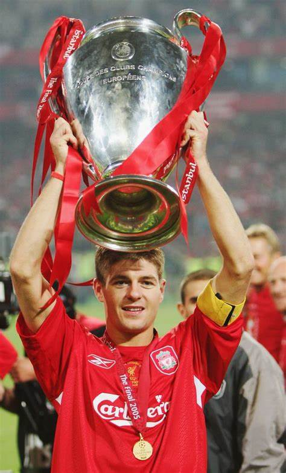
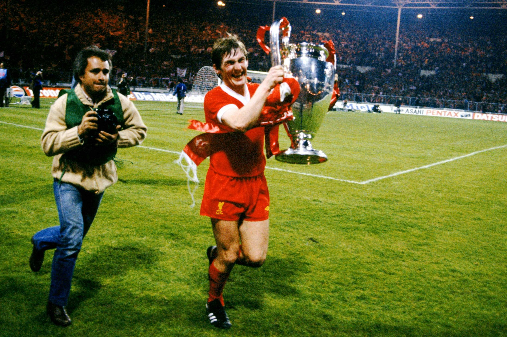
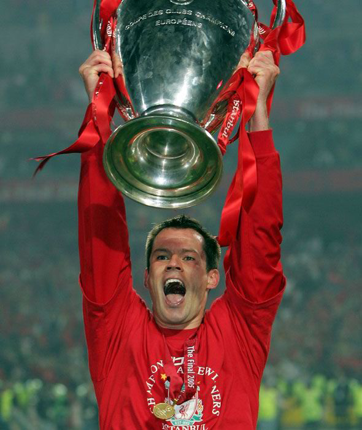

Club Legends:
It's difficult to narrow down the very best players to have represented Liverpool over the years, but that's exactly what we've done here. Regardless of position, and in no particular order, we've picked out the greatest 5 Liverpool players. Don't agree with our selection? Tell us in the comments below, including who we should have included.
Steven Gerrard:
Gerrard is undisputedly the greatest midfielder to ever wear the Liverpool shirt. twice bringing Liverpool close to the league title and as some reward at least captaining Liverpool to the best moment in their modern history, Istanbul.
Contributions in all competitions:
| Years |
Appearances |
Goals |
| 17 |
710 |
186 |

Kenny Dalglish:
In May 1978, Kenny Dalglish set himself on the path to legendary status in Liverpool during his first season at the club with the winning goal in the European Cup Final. In his second season, Dalglish recorded a personal best of 21 league goals for the club and was also named Football Writers' Association Footballer of the Year.
Contributions in all competitions:
| Years |
Appearances |
Goals |
| 13 |
515 |
172 |

Ian Rush:
An iconic Ian Rush moment came during the Mesrseyside Derby in November 1982. Rush netted four goals as Liverpool defeated their bitter rivals Everton 5-0 at Goodison Park. The 1983-84 season was perhaps Rush's finest. A remarkable 47-goal haul (50 if you count his spot kick conversion in Rome and two goals for Wales) was enough to see him become the first British player to win Europe's Golden Boot. This was a perfect accompaniment to an unprecedented treble of league title, European Cup and Milk Cup, not to mention double player of the year recognition.
Contributions in all competitions:
| Years |
Appearances |
Goals |
| 7 |
331 |
207 |

John Barnes:
John Barnes played a pivotal role in the tightly contested 1989 FA Cup Final between Merseyside rivals Everton and Liverpool. A last-minute Everton equaliser took the game to extra time at 1-1. After a second goal for each side, Barnes provided a pinpoint cross into the box to set up the eventual winner. It was a day to rember for Barnes as he lifted the FA Cup trophy for the first time. Barnes won two league titles with Liverpool, with whom he also won two cup finals at Wembley.
Contributions in all competitions:
| Years |
Appearances |
Goals |
| 10 |
407 |
108 |

Jamie Caragher:
The 2004-05 season proved to be a career-defining one for Carragher, as he lifted the Champions League in Istanbul. New manager Rafael Benítez moved him to centre-half, where he would manage 56 appearances all season alongside Sami Hyypiä. Carragher developed a reputation as a strong and positionally astute defender and would remain in the centre-half position for the rest of his career.
Contributions in all competitions:
| Years |
Appearances |
Goals |
| 17 |
508 |
3 |
